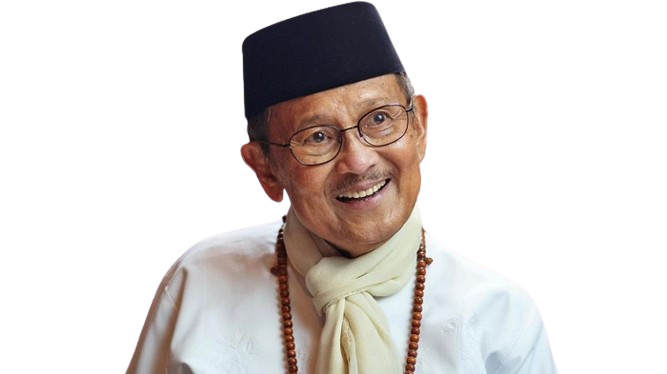

B.J. Habibie

Prof. Dr.-Ing. Ir. H. Bacharuddin Jusuf Habibie, FREng. adalah Presiden Republik Indonesia yang ketiga.
Prof. Dr.-Ing. Ir. H. Bacharuddin Jusuf Habibie, FREng. adalah Presiden Republik Indonesia yang ketiga.
About
Prof. Dr.-Ing. Ir. H. Bacharuddin Jusuf Habibie, FREng. (25 Juni 1936 – 11 September 2019)[2] adalah Presiden Republik Indonesia yang ketiga. Sebelumnya, B.J. Habibie menjabat sebagai Wakil Presiden Republik Indonesia ke-7, menggantikan Try Sutrisno. B. J. Habibie menggantikan Soeharto yang mengundurkan diri dari jabatan presiden pada tanggal 21 Mei 1998. Sebelum memasuki dunia politik, Habibie dikenal luas sebagai seorang profesor dan ilmuwan dalam teknologi aviasi internasional dan satu-satunya presiden Indonesia hingga saat ini yang berlatarbelakang teknokrat.